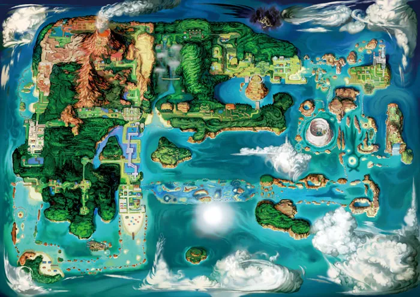

- 관동지방
- 성도지방
- 호연지방

호연지방
포켓몬스터 시리즈의 3세대 작품군인 포켓몬스터 루비·사파이어, 포켓몬스터 에메랄드와 애니메이션 포켓몬스터 AG 그리고 3세대 리메이크인 6세대 포켓몬스터 오메가루비·알파사파이어의 무대가 되는 지역이다.
일본명의 유래는 한자로 바꾸면 풍연이라는 뜻으로, '사람과 사람 사이 또는 포켓몬과 사람 사이의 인연이 풍부하다'라는 의미와 규슈의 고지명인 호슈(豊州)[1]를 살짝 비튼 뜻을 가진다. 마스다 준이치의 말에 따르면 풍부한 인연이 있는 장소(豊かな縁のある場所)의 풍연(豊縁).
한국판은 여태까지, 그리고 이후의 신오지방도 포함하여 일본 베이스 지방의 이름은 유래가 된 한자의 한국식 음으로 그대로 번역해왔지만 이번에는 일본판 발음을 약간 바꿔서 가져왔다.